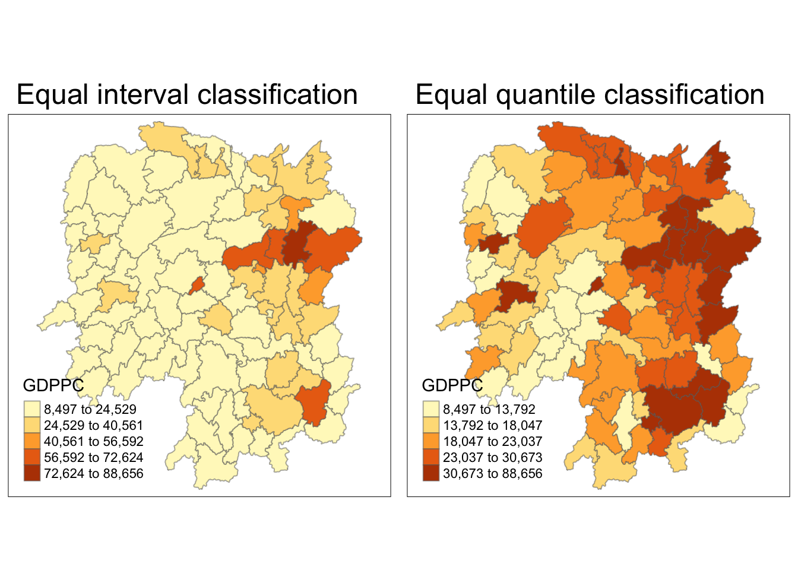
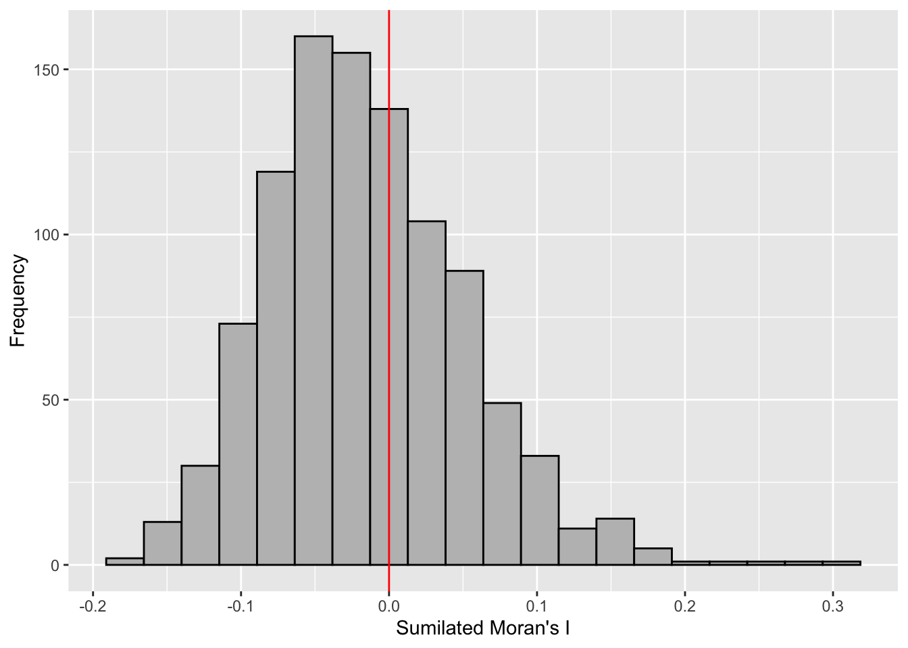
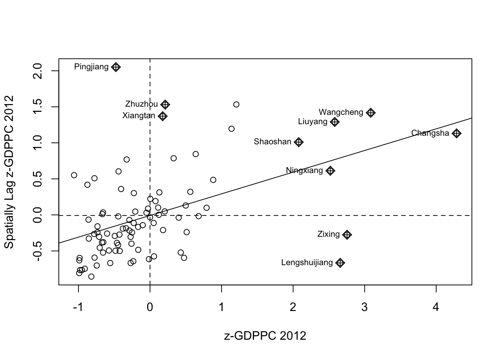
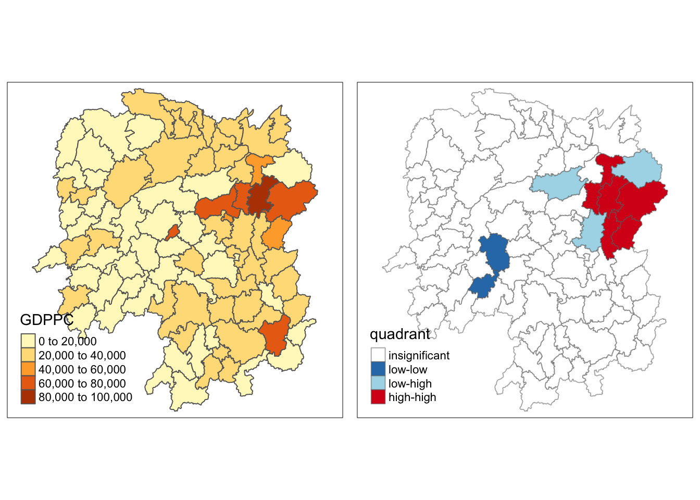
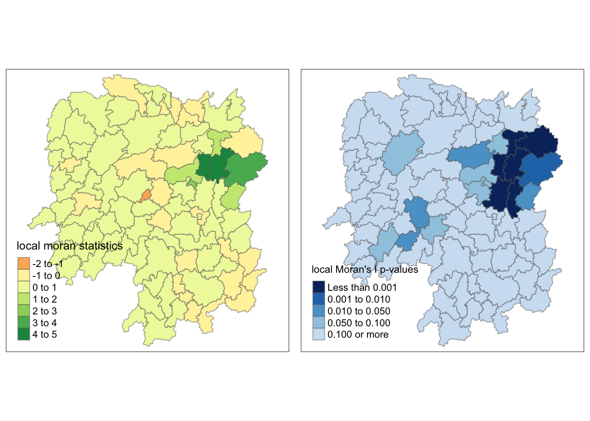
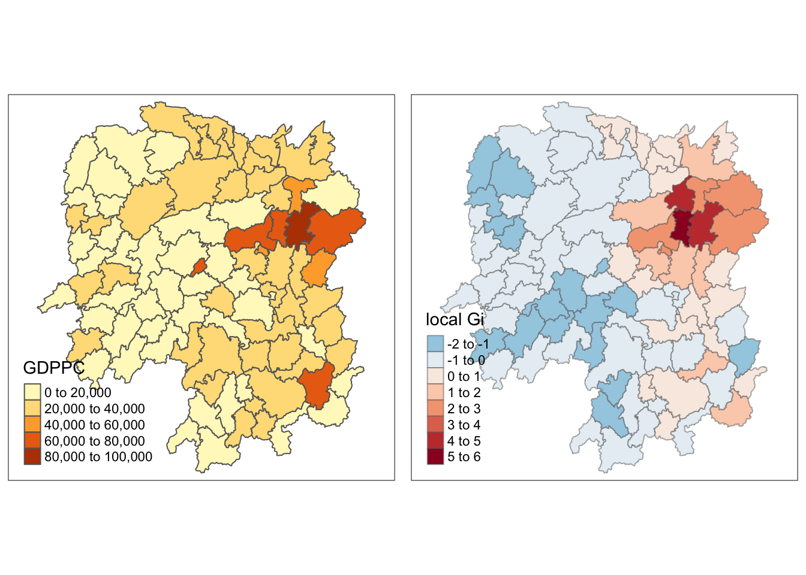

pacman::p_load(sf, spdep, tmap, tidyverse)Hands-on Exercise 2C: Local Measures of Spatial Autocorrelation
Overview
This hands-on exercise covers Chapter 10: Local Measures of Spatial Autocorrelation
I learned about the following:
- Global Spatial Autocorrelation (GSA) statistics
- Local Indicator of Spatial Association (LISA) statistics
- Getis-Ord’s Gi-statistics
Preparing the data sets
Data sets used on this exercise were downloaded from E-learn.
Geospatial
- Hunan county boundary layer (
shpformat)
Aspatial
- Hunan’s local development indicators in 2012 (
csvformat)
Next, is putting them under the Hands-on_Ex2 directory, with the following file structure:
Hands-on_Ex2
└── data
├── aspatial
│ └── Hunan_2012.csv
└── geospatial
├── Hunan.dbf
├── Hunan.prj
├── Hunan.qpj
├── Hunan.shp
└── Hunan.shxInstalling R packages
I used the code below to install the R packages used in the exercise:
Getting the Data Into R Environment
Important
The steps here are similar to Hands-on Exercise 2B’s Getting the Data Into R Environment
However, I copied all steps here so this page can run all the R code by itself.
Importing data sets
I used st_read() to import the geospatial shp data.
hunan <- st_read(dsn = "data/geospatial",
layer = "Hunan")Reading layer `Hunan' from data source
`/Users/kjcpaas/Documents/Grad School/ISSS624/Project/ISSS624/Hands-on_Ex2/data/geospatial'
using driver `ESRI Shapefile'
Simple feature collection with 88 features and 7 fields
Geometry type: POLYGON
Dimension: XY
Bounding box: xmin: 108.7831 ymin: 24.6342 xmax: 114.2544 ymax: 30.12812
Geodetic CRS: WGS 84
Note
In the previous exercises, we transformed the data with EPSG:3414. However, that is not applicable for this data set as we are not working with Singapore 🇸🇬 data set.
As with the previous exercises, I used read_csv() to import aspatial csv data.
hunan2012 <- read_csv("data/aspatial/Hunan_2012.csv")Joining the data sets
In the exercise, we have to join the 2 data sets using this code:
hunan <- left_join(hunan, hunan2012)%>%
select(1:4, 7, 15)
Note
We did not specify any columns to join by but left_join detected common column, County, so it joined the 2 data sets by this column.
At the end of this, we are left with 7 columns, which includes GDPPC from the aspatial data, which contains data for Gross Domestic Product per Capita.
Visualizing Regional Development Indicator
Next, I plotted the GDPPC maps using equal interval classification and equal quantile classification.
equal <- tm_shape(hunan) +
tm_fill("GDPPC",
n = 5,
style = "equal") +
tm_borders(alpha = 0.5) +
tm_layout(main.title = "Equal interval classification")
quantile <- tm_shape(hunan) +
tm_fill("GDPPC",
n = 5,
style = "quantile") +
tm_borders(alpha = 0.5) +
tm_layout(main.title = "Equal quantile classification")
tmap_arrange(equal,
quantile,
asp=1,
ncol=2)
Global Spatial Autocorrelation
Important
The steps here are similar to Hands-on Exercise 2B’s Global Spatial Autocorrelation
However, I copied all steps here so this page can run all the R code by itself.
Computing Contiguity Spatial Weights
First, I built the neighbor list using Queen contiguity-based neighbors. This means the regions must share a border (minimum a point) to be considered neighbors.
wm_q <- poly2nb(hunan,
queen=TRUE)
summary(wm_q)Neighbour list object:
Number of regions: 88
Number of nonzero links: 448
Percentage nonzero weights: 5.785124
Average number of links: 5.090909
Link number distribution:
1 2 3 4 5 6 7 8 9 11
2 2 12 16 24 14 11 4 2 1
2 least connected regions:
30 65 with 1 link
1 most connected region:
85 with 11 linksRow-standardized weights matrix
Next, I assigned weights to each neighboring county with value 1/(# of neighbors). This could be done by using style="W" to nb2listw().
rswm_q <- nb2listw(wm_q,
style="W",
zero.policy = TRUE)
rswm_qCharacteristics of weights list object:
Neighbour list object:
Number of regions: 88
Number of nonzero links: 448
Percentage nonzero weights: 5.785124
Average number of links: 5.090909
Weights style: W
Weights constants summary:
n nn S0 S1 S2
W 88 7744 88 37.86334 365.9147Global Spatial Autocorrelation: Moran’s I
Moran’s I test
Next, I used Moran’s I statistical testing using moran.test().
moran.test(hunan$GDPPC,
listw=rswm_q,
zero.policy = TRUE,
na.action=na.omit)
Moran I test under randomisation
data: hunan$GDPPC
weights: rswm_q
Moran I statistic standard deviate = 4.7351, p-value = 1.095e-06
alternative hypothesis: greater
sample estimates:
Moran I statistic Expectation Variance
0.300749970 -0.011494253 0.004348351
Tip
The Moran’s I value is 0.30075, which is greater than 0. This means that observations are clustered, and tend to be similar.
The p-value is also very close to 0, which indicates high confidence on the correlation.
Computing Monte Carlo Moran’s I
Next, a Monte Carlo simulation was performed for the Moran’s I statistic. 1000 simulations were performed by the code below:
set.seed(1234)
bperm = moran.mc(hunan$GDPPC,
listw=rswm_q,
nsim=999,
zero.policy = TRUE,
na.action=na.omit)
bperm
Monte-Carlo simulation of Moran I
data: hunan$GDPPC
weights: rswm_q
number of simulations + 1: 1000
statistic = 0.30075, observed rank = 1000, p-value = 0.001
alternative hypothesis: greater
Tip
The Moran’s I value is 0.30075, same result as that of the Moran’s I test. Similarly, it means that observations are clustered, and tend to be similar.
The p-value is also very close to 0, which indicates high confidence on the correlation.
Visualizing Monte Carlo Moran’s I
First, I examined the statistics of the Monte Carlo Moran’s I. I checked the mean, variance, and the quantiles.
mean(bperm$res[1:999])[1] -0.01504572var(bperm$res[1:999])[1] 0.004371574summary(bperm$res[1:999]) Min. 1st Qu. Median Mean 3rd Qu. Max.
-0.18339 -0.06168 -0.02125 -0.01505 0.02611 0.27593 Next, I also plotted the histogram.
Important
I plotted using ggplot2 as an additional challenge from the exercise.
mc_results_df <- data.frame(moran_i = bperm$res)
ggplot(mc_results_df, aes(x = moran_i)) +
geom_histogram(bins = 20, fill = "grey", color = "black") +
geom_vline(xintercept = 0, color = "red") +
labs(x = "Sumilated Moran's I",
y = "Frequency")
Note
From this Monte Carlo simulations, results are skewed to the left, meaning most of the Moran’s I simulations result in negative values. It means that in most simulation results, there is dispersion so there is no spatial correlation.
This is quite contradictory to the statistic from moran.test.
However, as this is a simulation set using seed 1234, results could be different in other simulations because the sampling is different.
Global Spatial Autocorrelation: Geary’s
Next I used Geary’s method for spatial correlation.
Geary’s C test
geary.test(hunan$GDPPC, listw=rswm_q)
Geary C test under randomisation
data: hunan$GDPPC
weights: rswm_q
Geary C statistic standard deviate = 3.6108, p-value = 0.0001526
alternative hypothesis: Expectation greater than statistic
sample estimates:
Geary C statistic Expectation Variance
0.6907223 1.0000000 0.0073364
Tip
Geary’s C statistic is 0.6907, which is less than 1. This means that observations are clustered, and tend to be similar. P-value is also very close to 0, suggesting high-confidence.
It is consistent with the conclusions in Moran’s I test.
Computing Monte Carlo Geary’s C
Similarly, I did permutation test via Monte Carlo simulations.
set.seed(1234)
bperm=geary.mc(hunan$GDPPC,
listw=rswm_q,
nsim=999)
bperm
Monte-Carlo simulation of Geary C
data: hunan$GDPPC
weights: rswm_q
number of simulations + 1: 1000
statistic = 0.69072, observed rank = 1, p-value = 0.001
alternative hypothesis: greater
Tip
The Moran’s I value is 0.6907, same result as that of the Geary’s C test. Similarly, it means that observations are clustered, and tend to be similar.
The p-value is also very close to 0, which indicates high confidence on the correlation.
Visualizing Monte Carlo Geary’s C
First, I examined the statistics of the Monte Carlo Geary’s C. I checked the mean, variance, and the quantiles.
mean(bperm$res[1:999])[1] 1.004402var(bperm$res[1:999])[1] 0.007436493summary(bperm$res[1:999]) Min. 1st Qu. Median Mean 3rd Qu. Max.
0.7142 0.9502 1.0052 1.0044 1.0595 1.2722 Finally, visualizing it.
hist(bperm$res, freq=TRUE, breaks=20, xlab="Simulated Geary c")
abline(v=1, col="red")
Note
From this Monte Carlo simulations, results are quite balanced on 1, which makes it inconclusive as to the spatial clustering and dispersion.
This is quite contrary to the statistic resulting from geary.test(), which was more conclusive.
However, as this is a simulation set using seed 1234, results could be different in other simulations because the sampling is different.
Spatial Correlograms
Important
The steps here are similar to Hands-on Exercise 2B’s Spatial Correlograms
However, I copied all steps here so this page can run all the R code by itself.
Next, was to generate correlograms to look at patterns from a different perspective. This is done via st.correlogram().
Compute Moran’s I correlogram
First, I generated the correlogram for Morans’s I.
MI_corr <- sp.correlogram(wm_q,
hunan$GDPPC,
order=6,
method="I",
style="W")
plot(MI_corr)
This did not provide me much information and I didn’t know how to interpret it so I printed the full result.
print(MI_corr)Spatial correlogram for hunan$GDPPC
method: Moran's I
estimate expectation variance standard deviate Pr(I) two sided
1 (88) 0.3007500 -0.0114943 0.0043484 4.7351 2.189e-06 ***
2 (88) 0.2060084 -0.0114943 0.0020962 4.7505 2.029e-06 ***
3 (88) 0.0668273 -0.0114943 0.0014602 2.0496 0.040400 *
4 (88) 0.0299470 -0.0114943 0.0011717 1.2107 0.226015
5 (88) -0.1530471 -0.0114943 0.0012440 -4.0134 5.984e-05 ***
6 (88) -0.1187070 -0.0114943 0.0016791 -2.6164 0.008886 **
---
Signif. codes: 0 '***' 0.001 '**' 0.01 '*' 0.05 '.' 0.1 ' ' 1
Tip
From my understanding, since Moran’s I values are greater than 0 and highest on lag 1, it means that the spatial correlation is most significant the closer the regions are.
Compute Geary’s C correlogram
Next, I generated the correlogram for Geary’s C.
GC_corr <- sp.correlogram(wm_q,
hunan$GDPPC,
order=6,
method="C",
style="W")
plot(GC_corr)
Next was to print the results.
print(GC_corr)Spatial correlogram for hunan$GDPPC
method: Geary's C
estimate expectation variance standard deviate Pr(I) two sided
1 (88) 0.6907223 1.0000000 0.0073364 -3.6108 0.0003052 ***
2 (88) 0.7630197 1.0000000 0.0049126 -3.3811 0.0007220 ***
3 (88) 0.9397299 1.0000000 0.0049005 -0.8610 0.3892612
4 (88) 1.0098462 1.0000000 0.0039631 0.1564 0.8757128
5 (88) 1.2008204 1.0000000 0.0035568 3.3673 0.0007592 ***
6 (88) 1.0773386 1.0000000 0.0058042 1.0151 0.3100407
---
Signif. codes: 0 '***' 0.001 '**' 0.01 '*' 0.05 '.' 0.1 ' ' 1
Tip
The Geary’s C values are closest to 0 on the lag distance 1. Similar to Compute Moran’s I correlogram, the spatial correlation is strongest the closer the regions are.
The pattern is inverse of the Moran’s I correlogram, which makes sense as Moran’s I and Geary’s C trends are inverse of each other.
Cluster and Outlier Analysis
The previous chapters are about Global Spatial Autocorrelation. In this part, I looked for local patterns that occur in subsets of the geospatial data.
Computing Local Moran’s I
First, I started with computing local Moran’s I values.
The code chunks below were used to compute local Moran’s I of GDPPC2012 at the county level.
fips <- order(hunan$County)
localMI <- localmoran(hunan$GDPPC, rswm_q)
head(localMI) Ii E.Ii Var.Ii Z.Ii Pr(z != E(Ii))
1 -0.001468468 -2.815006e-05 4.723841e-04 -0.06626904 0.9471636
2 0.025878173 -6.061953e-04 1.016664e-02 0.26266425 0.7928094
3 -0.011987646 -5.366648e-03 1.133362e-01 -0.01966705 0.9843090
4 0.001022468 -2.404783e-07 5.105969e-06 0.45259801 0.6508382
5 0.014814881 -6.829362e-05 1.449949e-03 0.39085814 0.6959021
6 -0.038793829 -3.860263e-04 6.475559e-03 -0.47728835 0.6331568This code chunk result in a matrix with columns:
Ii: the local Moran’s I statistics
E.Ii: the expectation of local moran statistic under the randomisation hypothesis
Var.Ii: the variance of local moran statistic under the randomisation hypothesis
Z.Ii:the standard deviate of local moran statistic
Pr(): the p-value of local moran statistic
The local Moran’s I values were inspected by:
printCoefmat(data.frame(
localMI[fips,],
row.names=hunan$County[fips]),
check.names=FALSE) Ii E.Ii Var.Ii Z.Ii Pr.z....E.Ii..
Anhua -2.2493e-02 -5.0048e-03 5.8235e-02 -7.2467e-02 0.9422
Anren -3.9932e-01 -7.0111e-03 7.0348e-02 -1.4791e+00 0.1391
Anxiang -1.4685e-03 -2.8150e-05 4.7238e-04 -6.6269e-02 0.9472
Baojing 3.4737e-01 -5.0089e-03 8.3636e-02 1.2185e+00 0.2230
Chaling 2.0559e-02 -9.6812e-04 2.7711e-02 1.2932e-01 0.8971
Changning -2.9868e-05 -9.0010e-09 1.5105e-07 -7.6828e-02 0.9388
Changsha 4.9022e+00 -2.1348e-01 2.3194e+00 3.3590e+00 0.0008
Chengbu 7.3725e-01 -1.0534e-02 2.2132e-01 1.5895e+00 0.1119
Chenxi 1.4544e-01 -2.8156e-03 4.7116e-02 6.8299e-01 0.4946
Cili 7.3176e-02 -1.6747e-03 4.7902e-02 3.4200e-01 0.7324
Dao 2.1420e-01 -2.0824e-03 4.4123e-02 1.0297e+00 0.3032
Dongan 1.5210e-01 -6.3485e-04 1.3471e-02 1.3159e+00 0.1882
Dongkou 5.2918e-01 -6.4461e-03 1.0748e-01 1.6338e+00 0.1023
Fenghuang 1.8013e-01 -6.2832e-03 1.3257e-01 5.1198e-01 0.6087
Guidong -5.9160e-01 -1.3086e-02 3.7003e-01 -9.5104e-01 0.3416
Guiyang 1.8240e-01 -3.6908e-03 3.2610e-02 1.0305e+00 0.3028
Guzhang 2.8466e-01 -8.5054e-03 1.4152e-01 7.7931e-01 0.4358
Hanshou 2.5878e-02 -6.0620e-04 1.0167e-02 2.6266e-01 0.7928
Hengdong 9.9964e-03 -4.9063e-04 6.7742e-03 1.2742e-01 0.8986
Hengnan 2.8064e-02 -3.2160e-04 3.7597e-03 4.6294e-01 0.6434
Hengshan -5.8201e-03 -3.0437e-05 5.1076e-04 -2.5618e-01 0.7978
Hengyang 6.2997e-02 -1.3046e-03 2.1865e-02 4.3486e-01 0.6637
Hongjiang 1.8790e-01 -2.3019e-03 3.1725e-02 1.0678e+00 0.2856
Huarong -1.5389e-02 -1.8667e-03 8.1030e-02 -4.7503e-02 0.9621
Huayuan 8.3772e-02 -8.5569e-04 2.4495e-02 5.4072e-01 0.5887
Huitong 2.5997e-01 -5.2447e-03 1.1077e-01 7.9685e-01 0.4255
Jiahe -1.2431e-01 -3.0550e-03 5.1111e-02 -5.3633e-01 0.5917
Jianghua 2.8651e-01 -3.8280e-03 8.0968e-02 1.0204e+00 0.3076
Jiangyong 2.4337e-01 -2.7082e-03 1.1746e-01 7.1800e-01 0.4728
Jingzhou 1.8270e-01 -8.5106e-04 2.4363e-02 1.1759e+00 0.2396
Jinshi -1.1988e-02 -5.3666e-03 1.1334e-01 -1.9667e-02 0.9843
Jishou -2.8680e-01 -2.6305e-03 4.4028e-02 -1.3543e+00 0.1756
Lanshan 6.3334e-02 -9.6365e-04 2.0441e-02 4.4972e-01 0.6529
Leiyang 1.1581e-02 -1.4948e-04 2.5082e-03 2.3422e-01 0.8148
Lengshuijiang -1.7903e+00 -8.2129e-02 2.1598e+00 -1.1623e+00 0.2451
Li 1.0225e-03 -2.4048e-07 5.1060e-06 4.5260e-01 0.6508
Lianyuan -1.4672e-01 -1.8983e-03 1.9145e-02 -1.0467e+00 0.2952
Liling 1.3774e+00 -1.5097e-02 4.2601e-01 2.1335e+00 0.0329
Linli 1.4815e-02 -6.8294e-05 1.4499e-03 3.9086e-01 0.6959
Linwu -2.4621e-03 -9.0703e-06 1.9258e-04 -1.7676e-01 0.8597
Linxiang 6.5904e-02 -2.9028e-03 2.5470e-01 1.3634e-01 0.8916
Liuyang 3.3688e+00 -7.7502e-02 1.5180e+00 2.7972e+00 0.0052
Longhui 8.0801e-01 -1.1377e-02 1.5538e-01 2.0787e+00 0.0376
Longshan 7.5663e-01 -1.1100e-02 3.1449e-01 1.3690e+00 0.1710
Luxi 1.8177e-01 -2.4855e-03 3.4249e-02 9.9561e-01 0.3194
Mayang 2.1852e-01 -5.8773e-03 9.8049e-02 7.1663e-01 0.4736
Miluo 1.8704e+00 -1.6927e-02 2.7925e-01 3.5715e+00 0.0004
Nan -9.5789e-03 -4.9497e-04 6.8341e-03 -1.0988e-01 0.9125
Ningxiang 1.5607e+00 -7.3878e-02 8.0012e-01 1.8274e+00 0.0676
Ningyuan 2.0910e-01 -7.0884e-03 8.2306e-02 7.5356e-01 0.4511
Pingjiang -9.8964e-01 -2.6457e-03 5.6027e-02 -4.1698e+00 0.0000
Qidong 1.1806e-01 -2.1207e-03 2.4747e-02 7.6396e-01 0.4449
Qiyang 6.1966e-02 -7.3374e-04 8.5743e-03 6.7712e-01 0.4983
Rucheng -3.6992e-01 -8.8999e-03 2.5272e-01 -7.1814e-01 0.4727
Sangzhi 2.5053e-01 -4.9470e-03 6.8000e-02 9.7972e-01 0.3272
Shaodong -3.2659e-02 -3.6592e-05 5.0546e-04 -1.4510e+00 0.1468
Shaoshan 2.1223e+00 -5.0227e-02 1.3668e+00 1.8583e+00 0.0631
Shaoyang 5.9499e-01 -1.1253e-02 1.3012e-01 1.6807e+00 0.0928
Shimen -3.8794e-02 -3.8603e-04 6.4756e-03 -4.7729e-01 0.6332
Shuangfeng 9.2835e-03 -2.2867e-03 3.1516e-02 6.5174e-02 0.9480
Shuangpai 8.0591e-02 -3.1366e-04 8.9838e-03 8.5358e-01 0.3933
Suining 3.7585e-01 -3.5933e-03 4.1870e-02 1.8544e+00 0.0637
Taojiang -2.5394e-01 -1.2395e-03 1.4477e-02 -2.1002e+00 0.0357
Taoyuan 1.4729e-02 -1.2039e-04 8.5103e-04 5.0903e-01 0.6107
Tongdao 4.6482e-01 -6.9870e-03 1.9879e-01 1.0582e+00 0.2900
Wangcheng 4.4220e+00 -1.1067e-01 1.3596e+00 3.8873e+00 0.0001
Wugang 7.1003e-01 -7.8144e-03 1.0710e-01 2.1935e+00 0.0283
Xiangtan 2.4530e-01 -3.6457e-04 3.2319e-03 4.3213e+00 0.0000
Xiangxiang 2.6271e-01 -1.2703e-03 2.1290e-02 1.8092e+00 0.0704
Xiangyin 5.4525e-01 -4.7442e-03 7.9236e-02 1.9539e+00 0.0507
Xinhua 1.1810e-01 -6.2649e-03 8.6001e-02 4.2409e-01 0.6715
Xinhuang 1.5725e-01 -4.1820e-03 3.6648e-01 2.6667e-01 0.7897
Xinning 6.8928e-01 -9.6674e-03 2.0328e-01 1.5502e+00 0.1211
Xinshao 5.7578e-02 -8.5932e-03 1.1769e-01 1.9289e-01 0.8470
Xintian -7.4050e-03 -5.1493e-03 1.0877e-01 -6.8395e-03 0.9945
Xupu 3.2406e-01 -5.7468e-03 5.7735e-02 1.3726e+00 0.1699
Yanling -6.9021e-02 -5.9211e-04 9.9306e-03 -6.8667e-01 0.4923
Yizhang -2.6844e-01 -2.2463e-03 4.7588e-02 -1.2202e+00 0.2224
Yongshun 6.3064e-01 -1.1350e-02 1.8830e-01 1.4795e+00 0.1390
Yongxing 4.3411e-01 -9.0735e-03 1.5088e-01 1.1409e+00 0.2539
You 7.8750e-02 -7.2728e-03 1.2116e-01 2.4714e-01 0.8048
Yuanjiang 2.0004e-04 -1.7760e-04 2.9798e-03 6.9181e-03 0.9945
Yuanling 8.7298e-03 -2.2981e-06 2.3221e-05 1.8121e+00 0.0700
Yueyang 4.1189e-02 -1.9768e-04 2.3113e-03 8.6085e-01 0.3893
Zhijiang 1.0476e-01 -7.8123e-04 1.3100e-02 9.2214e-01 0.3565
Zhongfang -2.2685e-01 -2.1455e-03 3.5927e-02 -1.1855e+00 0.2358
Zhuzhou 3.2864e-01 -5.2432e-04 7.2391e-03 3.8688e+00 0.0001
Zixing -7.6849e-01 -8.8210e-02 9.4057e-01 -7.0144e-01 0.4830Mapping local Moran’s I
Before proceeding with the mapping, I appended localMI dataframe onto the hunan dataframe.
hunan.localMI <- cbind(hunan,localMI) %>%
rename(Pr.Ii = Pr.z....E.Ii..)Then, I plotted a cloropeth map of the local Moran’s I values and the p-values using tmap functions. These maps were plotted side by side for easier analysis.
localMI.map <- tm_shape(hunan.localMI) +
tm_fill(col = "Ii",
style = "pretty",
title = "local moran statistics") +
tm_borders(alpha = 0.5)
pvalue.map <- tm_shape(hunan.localMI) +
tm_fill(col = "Pr.Ii",
breaks=c(-Inf, 0.001, 0.01, 0.05, 0.1, Inf),
palette="-Blues",
title = "local Moran's I p-values") +
tm_borders(alpha = 0.5)
tmap_arrange(localMI.map, pvalue.map, asp=1, ncol=2)
Creating a LISA Cluster Map
The LISA Cluster Map shows the significant locations color coded by type of spatial autocorrelation.
Plotting Moran scatterplot
In order to do this, I have to plot the Moran’s I scatterplot first. This can be via moran.plot().
nci <- moran.plot(hunan$GDPPC, rswm_q,
labels=as.character(hunan$County),
xlab="GDPPC 2012",
ylab="Spatially Lag GDPPC 2012")
Note
This can be be interpreted such that the counties on the upper-right quadrant (e.g., Shaosan, Ningxian, Liuyang, Wangchen, Changsa) are within an affluent region, i.e., cluster of counties with high GDP per capita.
Some other counties of interest are Zixing and Lengshuijiang, which are more affluent than their neighbors. Lastly, Pingjian is less affluent compared to its neighbors.
Plotting Moran scatterplot with standardized variable
Next is to scale the plot by normalizing the axes, which should align the axes to 0. scale() was used for this purpose.
hunan$Z.GDPPC <- scale(hunan$GDPPC) %>%
as.vector After scaling, I replotted the scatterplot.
nci2 <- moran.plot(hunan$Z.GDPPC, rswm_q,
labels=as.character(hunan$County),
xlab="z-GDPPC 2012",
ylab="Spatially Lag z-GDPPC 2012")
Preparing LISA map classes
To prepare LISA cluster map, I had to first create a numeric vector with the same number of elements as localMI, which is 88.
quadrant <- vector(mode="numeric",length=nrow(localMI))Next was to compute the lag values and centering on the mean.
hunan$lag_GDPPC <- lag.listw(rswm_q, hunan$GDPPC)
DV <- hunan$lag_GDPPC - mean(hunan$lag_GDPPC)Similarly, i also centered the local Moran’s I values around the mean.
LM_I <- localMI[,1] - mean(localMI[,1]) I also set the significant value to 0.05 as per standards.
signif <- 0.05Then, I defined the low-low (1), low-high (2), high-low (3) and high-high (4) categories. This corresponds to the quadrants in the scatterplot from Plotting Moran scatterplot.
quadrant[DV <0 & LM_I>0] <- 1
quadrant[DV >0 & LM_I<0] <- 2
quadrant[DV <0 & LM_I<0] <- 3
quadrant[DV >0 & LM_I>0] <- 4Lastly, was to add a category for non-significant Moran’s I values.
quadrant[localMI[,5]>signif] <- 0Plotting LISA map
After preparing the classes, I could finally plot the LISA map. As with the other maps so far, I used tmap() functions to created this map.
For easier analysis, I plotted the LISA map next to the GDPPC map.
gdppc <- qtm(hunan, "GDPPC")
hunan.localMI$quadrant <- quadrant
colors <- c("#ffffff", "#2c7bb6", "#abd9e9", "#fdae61", "#d7191c")
clusters <- c("insignificant", "low-low", "low-high", "high-low", "high-high")
LISAmap <- tm_shape(hunan.localMI) +
tm_fill(col = "quadrant",
style = "cat",
palette = colors[c(sort(unique(quadrant)))+1],
labels = clusters[c(sort(unique(quadrant)))+1],
popup.vars = c("")) +
tm_view(set.zoom.limits = c(11,17)) +
tm_borders(alpha=0.5)
tmap_arrange(gdppc, LISAmap,
asp=1, ncol=2)
Note
I was expecting the 2 standalone orange counties from the GDPPC map (Zixing and Lengshuijiang) to be part of the high-low category. This is because they are relatively more affluent than their neighbors.
They were also on the high-low quadrant in the scatterplot. Hence, this result was surprising for me.
A possible explanation for this is that their GDPPC are just a little bit higher than 60,000, while their neighbors are in the high 50,000s. Visually, they distinct but a closer look at the number might reveal that the values are not really far-off.
I also plotted the local Moran’s I values and p-values side by side again to find clues as to why.
localMI.map <- tm_shape(hunan.localMI) +
tm_fill(col = "Ii",
style = "pretty",
title = "local moran statistics") +
tm_borders(alpha = 0.5)
pvalue.map <- tm_shape(hunan.localMI) +
tm_fill(col = "Pr.Ii",
breaks=c(-Inf, 0.001, 0.01, 0.05, 0.1, Inf),
palette="-Blues",
title = "local Moran's I p-values") +
tm_borders(alpha = 0.5)
tmap_arrange(localMI.map, pvalue.map, asp=1, ncol=2)
Note
As I mentioned, Zixing and Lengshuijiang were part of the high-low category as I originally expected.
The p-value provides a sound explanation why. This is because the p-values for these counties are 0.100 or more, which is more than the significance value that was set, which was 0.05.
We can say that the p-value map can be use as a filter such that those counties with p-values greater than the significance value are considered insignificant, and only those are not included in this group will be categorized.
Hot Spot and Cold Spot Area Analysis
Beside detecting cluster and outliers, localised spatial statistics can be also used to detect hot spot and/or cold spot areas.
Tip
In the current exercise, these are what the terminologies mean:
Hot spot - counties with higher GDPPC compared to its surroundings
Cold spot - counties with lower GDPPC compares to its surroundings
The analysis was done with Getis and Ord’s G-statistics and consists of 3 steps:
Deriving spatial weight matrix
Computing Gi statistics
Mapping Gi statistics
Deriving spatial weight matrix
Important
The code chunks used in this part are the same as the ones used in Hands-on Exercise 2A: Spatial Weights and Applications. I didn’t dive deep into these part as these was already learned.
For this exercise, binary spatial weights are used.
In order to calculate the spatial weights, I needed to get determine the cut-off distance first. This was done by deriving the centroids and calculating the distances to the nearest neighbor for each county.
longitude <- map_dbl(hunan$geometry, ~st_centroid(.x)[[1]])
latitude <- map_dbl(hunan$geometry, ~st_centroid(.x)[[2]])
coords <- cbind(longitude, latitude)
head(coords) longitude latitude
[1,] 112.1531 29.44362
[2,] 112.0372 28.86489
[3,] 111.8917 29.47107
[4,] 111.7031 29.74499
[5,] 111.6138 29.49258
[6,] 111.0341 29.79863These are the same steps as in [Hands-on Exercise 2A: Spatial Weights and Applications](/Hands-on_Ex2/Hands-on_Ex2A.html#determining-cut-off-distance), where we determined the cut-off distance to be 62km.
k1 <- knn2nb(knearneigh(coords))
k1dists <- unlist(nbdists(k1, coords, longlat = TRUE))
summary(k1dists) Min. 1st Qu. Median Mean 3rd Qu. Max.
24.79 32.57 38.01 39.07 44.52 61.79 Finally, the spatial weights matrix can be generated.
wm_d62 <- dnearneigh(coords, 0, 62, longlat = TRUE)
wm_d62Neighbour list object:
Number of regions: 88
Number of nonzero links: 324
Percentage nonzero weights: 4.183884
Average number of links: 3.681818 wm62_lw <- nb2listw(wm_d62, style = 'B')
summary(wm62_lw)Characteristics of weights list object:
Neighbour list object:
Number of regions: 88
Number of nonzero links: 324
Percentage nonzero weights: 4.183884
Average number of links: 3.681818
Link number distribution:
1 2 3 4 5 6
6 15 14 26 20 7
6 least connected regions:
6 15 30 32 56 65 with 1 link
7 most connected regions:
21 28 35 45 50 52 82 with 6 links
Weights style: B
Weights constants summary:
n nn S0 S1 S2
B 88 7744 324 648 5440As in the previous exercise, we could standardize the number of neighbors. This is because denser areas have more neighbors, while rural areas have less.
The code chunks below demonstrates how to standardize to 8 neighbors.
knn <- knn2nb(knearneigh(coords, k=8))
knnNeighbour list object:
Number of regions: 88
Number of nonzero links: 704
Percentage nonzero weights: 9.090909
Average number of links: 8
Non-symmetric neighbours listknn_lw <- nb2listw(knn, style = 'B')
summary(knn_lw)Characteristics of weights list object:
Neighbour list object:
Number of regions: 88
Number of nonzero links: 704
Percentage nonzero weights: 9.090909
Average number of links: 8
Non-symmetric neighbours list
Link number distribution:
8
88
88 least connected regions:
1 2 3 4 5 6 7 8 9 10 11 12 13 14 15 16 17 18 19 20 21 22 23 24 25 26 27 28 29 30 31 32 33 34 35 36 37 38 39 40 41 42 43 44 45 46 47 48 49 50 51 52 53 54 55 56 57 58 59 60 61 62 63 64 65 66 67 68 69 70 71 72 73 74 75 76 77 78 79 80 81 82 83 84 85 86 87 88 with 8 links
88 most connected regions:
1 2 3 4 5 6 7 8 9 10 11 12 13 14 15 16 17 18 19 20 21 22 23 24 25 26 27 28 29 30 31 32 33 34 35 36 37 38 39 40 41 42 43 44 45 46 47 48 49 50 51 52 53 54 55 56 57 58 59 60 61 62 63 64 65 66 67 68 69 70 71 72 73 74 75 76 77 78 79 80 81 82 83 84 85 86 87 88 with 8 links
Weights style: B
Weights constants summary:
n nn S0 S1 S2
B 88 7744 704 1300 23014Gi statistics with using fixed distance weights
Continuing from the steps above, I looked at two cases. In this part, I used the fixed distance weights.
First, I calculated the Gi statistics using the fixed distance weights.
fips <- order(hunan$County)
gi.fixed <- localG(hunan$GDPPC, wm62_lw)
gi.fixed [1] 0.436075843 -0.265505650 -0.073033665 0.413017033 0.273070579
[6] -0.377510776 2.863898821 2.794350420 5.216125401 0.228236603
[11] 0.951035346 -0.536334231 0.176761556 1.195564020 -0.033020610
[16] 1.378081093 -0.585756761 -0.419680565 0.258805141 0.012056111
[21] -0.145716531 -0.027158687 -0.318615290 -0.748946051 -0.961700582
[26] -0.796851342 -1.033949773 -0.460979158 -0.885240161 -0.266671512
[31] -0.886168613 -0.855476971 -0.922143185 -1.162328599 0.735582222
[36] -0.003358489 -0.967459309 -1.259299080 -1.452256513 -1.540671121
[41] -1.395011407 -1.681505286 -1.314110709 -0.767944457 -0.192889342
[46] 2.720804542 1.809191360 -1.218469473 -0.511984469 -0.834546363
[51] -0.908179070 -1.541081516 -1.192199867 -1.075080164 -1.631075961
[56] -0.743472246 0.418842387 0.832943753 -0.710289083 -0.449718820
[61] -0.493238743 -1.083386776 0.042979051 0.008596093 0.136337469
[66] 2.203411744 2.690329952 4.453703219 -0.340842743 -0.129318589
[71] 0.737806634 -1.246912658 0.666667559 1.088613505 -0.985792573
[76] 1.233609606 -0.487196415 1.626174042 -1.060416797 0.425361422
[81] -0.837897118 -0.314565243 0.371456331 4.424392623 -0.109566928
[86] 1.364597995 -1.029658605 -0.718000620
attr(,"internals")
Gi E(Gi) V(Gi) Z(Gi) Pr(z != E(Gi))
[1,] 0.064192949 0.05747126 2.375922e-04 0.436075843 6.627817e-01
[2,] 0.042300020 0.04597701 1.917951e-04 -0.265505650 7.906200e-01
[3,] 0.044961480 0.04597701 1.933486e-04 -0.073033665 9.417793e-01
[4,] 0.039475779 0.03448276 1.461473e-04 0.413017033 6.795941e-01
[5,] 0.049767939 0.04597701 1.927263e-04 0.273070579 7.847990e-01
[6,] 0.008825335 0.01149425 4.998177e-05 -0.377510776 7.057941e-01
[7,] 0.050807266 0.02298851 9.435398e-05 2.863898821 4.184617e-03
[8,] 0.083966739 0.04597701 1.848292e-04 2.794350420 5.200409e-03
[9,] 0.115751554 0.04597701 1.789361e-04 5.216125401 1.827045e-07
[10,] 0.049115587 0.04597701 1.891013e-04 0.228236603 8.194623e-01
[11,] 0.045819180 0.03448276 1.420884e-04 0.951035346 3.415864e-01
[12,] 0.049183846 0.05747126 2.387633e-04 -0.536334231 5.917276e-01
[13,] 0.048429181 0.04597701 1.924532e-04 0.176761556 8.596957e-01
[14,] 0.034733752 0.02298851 9.651140e-05 1.195564020 2.318667e-01
[15,] 0.011262043 0.01149425 4.945294e-05 -0.033020610 9.736582e-01
[16,] 0.065131196 0.04597701 1.931870e-04 1.378081093 1.681783e-01
[17,] 0.027587075 0.03448276 1.385862e-04 -0.585756761 5.580390e-01
[18,] 0.029409313 0.03448276 1.461397e-04 -0.419680565 6.747188e-01
[19,] 0.061466754 0.05747126 2.383385e-04 0.258805141 7.957856e-01
[20,] 0.057656917 0.05747126 2.371303e-04 0.012056111 9.903808e-01
[21,] 0.066518379 0.06896552 2.820326e-04 -0.145716531 8.841452e-01
[22,] 0.045599896 0.04597701 1.928108e-04 -0.027158687 9.783332e-01
[23,] 0.030646753 0.03448276 1.449523e-04 -0.318615290 7.500183e-01
[24,] 0.035635552 0.04597701 1.906613e-04 -0.748946051 4.538897e-01
[25,] 0.032606647 0.04597701 1.932888e-04 -0.961700582 3.362000e-01
[26,] 0.035001352 0.04597701 1.897172e-04 -0.796851342 4.255374e-01
[27,] 0.012746354 0.02298851 9.812587e-05 -1.033949773 3.011596e-01
[28,] 0.061287917 0.06896552 2.773884e-04 -0.460979158 6.448136e-01
[29,] 0.014277403 0.02298851 9.683314e-05 -0.885240161 3.760271e-01
[30,] 0.009622875 0.01149425 4.924586e-05 -0.266671512 7.897221e-01
[31,] 0.014258398 0.02298851 9.705244e-05 -0.886168613 3.755267e-01
[32,] 0.005453443 0.01149425 4.986245e-05 -0.855476971 3.922871e-01
[33,] 0.043283712 0.05747126 2.367109e-04 -0.922143185 3.564539e-01
[34,] 0.020763514 0.03448276 1.393165e-04 -1.162328599 2.451020e-01
[35,] 0.081261843 0.06896552 2.794398e-04 0.735582222 4.619850e-01
[36,] 0.057419907 0.05747126 2.338437e-04 -0.003358489 9.973203e-01
[37,] 0.013497133 0.02298851 9.624821e-05 -0.967459309 3.333145e-01
[38,] 0.019289310 0.03448276 1.455643e-04 -1.259299080 2.079223e-01
[39,] 0.025996272 0.04597701 1.892938e-04 -1.452256513 1.464303e-01
[40,] 0.016092694 0.03448276 1.424776e-04 -1.540671121 1.233968e-01
[41,] 0.035952614 0.05747126 2.379439e-04 -1.395011407 1.630124e-01
[42,] 0.031690963 0.05747126 2.350604e-04 -1.681505286 9.266481e-02
[43,] 0.018750079 0.03448276 1.433314e-04 -1.314110709 1.888090e-01
[44,] 0.015449080 0.02298851 9.638666e-05 -0.767944457 4.425202e-01
[45,] 0.065760689 0.06896552 2.760533e-04 -0.192889342 8.470456e-01
[46,] 0.098966900 0.05747126 2.326002e-04 2.720804542 6.512325e-03
[47,] 0.085415780 0.05747126 2.385746e-04 1.809191360 7.042128e-02
[48,] 0.038816536 0.05747126 2.343951e-04 -1.218469473 2.230456e-01
[49,] 0.038931873 0.04597701 1.893501e-04 -0.511984469 6.086619e-01
[50,] 0.055098610 0.06896552 2.760948e-04 -0.834546363 4.039732e-01
[51,] 0.033405005 0.04597701 1.916312e-04 -0.908179070 3.637836e-01
[52,] 0.043040784 0.06896552 2.829941e-04 -1.541081516 1.232969e-01
[53,] 0.011297699 0.02298851 9.615920e-05 -1.192199867 2.331829e-01
[54,] 0.040968457 0.05747126 2.356318e-04 -1.075080164 2.823388e-01
[55,] 0.023629663 0.04597701 1.877170e-04 -1.631075961 1.028743e-01
[56,] 0.006281129 0.01149425 4.916619e-05 -0.743472246 4.571958e-01
[57,] 0.063918654 0.05747126 2.369553e-04 0.418842387 6.753313e-01
[58,] 0.070325003 0.05747126 2.381374e-04 0.832943753 4.048765e-01
[59,] 0.025947288 0.03448276 1.444058e-04 -0.710289083 4.775249e-01
[60,] 0.039752578 0.04597701 1.915656e-04 -0.449718820 6.529132e-01
[61,] 0.049934283 0.05747126 2.334965e-04 -0.493238743 6.218439e-01
[62,] 0.030964195 0.04597701 1.920248e-04 -1.083386776 2.786368e-01
[63,] 0.058129184 0.05747126 2.343319e-04 0.042979051 9.657182e-01
[64,] 0.046096514 0.04597701 1.932637e-04 0.008596093 9.931414e-01
[65,] 0.012459080 0.01149425 5.008051e-05 0.136337469 8.915545e-01
[66,] 0.091447733 0.05747126 2.377744e-04 2.203411744 2.756574e-02
[67,] 0.049575872 0.02298851 9.766513e-05 2.690329952 7.138140e-03
[68,] 0.107907212 0.04597701 1.933581e-04 4.453703219 8.440175e-06
[69,] 0.019616151 0.02298851 9.789454e-05 -0.340842743 7.332220e-01
[70,] 0.032923393 0.03448276 1.454032e-04 -0.129318589 8.971056e-01
[71,] 0.030317663 0.02298851 9.867859e-05 0.737806634 4.606320e-01
[72,] 0.019437582 0.03448276 1.455870e-04 -1.246912658 2.124295e-01
[73,] 0.055245460 0.04597701 1.932838e-04 0.666667559 5.049845e-01
[74,] 0.074278054 0.05747126 2.383538e-04 1.088613505 2.763244e-01
[75,] 0.013269580 0.02298851 9.719982e-05 -0.985792573 3.242349e-01
[76,] 0.049407829 0.03448276 1.463785e-04 1.233609606 2.173484e-01
[77,] 0.028605749 0.03448276 1.455139e-04 -0.487196415 6.261191e-01
[78,] 0.039087662 0.02298851 9.801040e-05 1.626174042 1.039126e-01
[79,] 0.031447120 0.04597701 1.877464e-04 -1.060416797 2.889550e-01
[80,] 0.064005294 0.05747126 2.359641e-04 0.425361422 6.705732e-01
[81,] 0.044606529 0.05747126 2.357330e-04 -0.837897118 4.020885e-01
[82,] 0.063700493 0.06896552 2.801427e-04 -0.314565243 7.530918e-01
[83,] 0.051142205 0.04597701 1.933560e-04 0.371456331 7.102977e-01
[84,] 0.102121112 0.04597701 1.610278e-04 4.424392623 9.671399e-06
[85,] 0.021901462 0.02298851 9.843172e-05 -0.109566928 9.127528e-01
[86,] 0.064931813 0.04597701 1.929430e-04 1.364597995 1.723794e-01
[87,] 0.031747344 0.04597701 1.909867e-04 -1.029658605 3.031703e-01
[88,] 0.015893319 0.02298851 9.765131e-05 -0.718000620 4.727569e-01
attr(,"cluster")
[1] Low Low High High High High High High High Low Low High Low Low Low
[16] High High High High Low High High Low Low High Low Low Low Low Low
[31] Low Low Low High Low Low Low Low Low Low High Low Low Low Low
[46] High High Low Low Low Low High Low Low Low Low Low High Low Low
[61] Low Low Low High High High Low High Low Low High Low High High Low
[76] High Low Low Low Low Low Low High High Low High Low Low
Levels: Low High
attr(,"gstari")
[1] FALSE
attr(,"call")
localG(x = hunan$GDPPC, listw = wm62_lw)
attr(,"class")
[1] "localG"Next is to add the Gi statistics to the hunan data frame.
hunan.gi <- cbind(hunan, as.matrix(gi.fixed)) %>%
rename(gstat_fixed = as.matrix.gi.fixed.)Finally, we could map the Gi values.
gdppc <- qtm(hunan, "GDPPC")
Gimap <-tm_shape(hunan.gi) +
tm_fill(col = "gstat_fixed",
style = "pretty",
palette="-RdBu",
title = "local Gi") +
tm_borders(alpha = 0.5)
tmap_arrange(gdppc, Gimap, asp=1, ncol=2)
Note
There is a cluster of counties with high GDDPC in the Eastern part of China.
A striking observation is that the other orange cities outside of this cluster are cold in the local Gi map. This means that they are surrounded by counties with low GDPPC.
There should be caution when interpreting the map on the right as it is not intuitive because the values are actually based on the neighbors, and not the counties themselves.
Gi statistics with using adaptive distance weights
Next we calculate the Gi statistics using adaptive distance weights.
The steps are the same as in Gi statistics with using fixed distance weights but instead using the adaptive weights (knn_lw) instead of the fixed weights(wm62_lw).
First was to calculate the Gi statistics.
fips <- order(hunan$County)
gi.adaptive <- localG(hunan$GDPPC, knn_lw)
gi.adaptive [1] 0.274428799 0.300225037 0.030447697 -0.009771412 -0.033921570
[6] -0.154780126 4.034649782 2.057586016 4.378892586 1.479129376
[11] 0.761743842 -0.648205275 -0.773677838 0.589236922 1.040407601
[16] 0.368526533 -0.604240867 -0.241840937 0.031714037 -0.110547691
[21] 0.761314356 1.175580259 -0.884714136 -0.860993329 -1.643096490
[26] -1.290687016 -1.422253022 -0.675281508 -1.719511109 -1.210266137
[31] -1.300914263 -1.599085669 -1.298761870 -1.836622587 1.637619520
[36] -0.721435309 -1.958848641 -1.665195897 -1.868014845 -1.183536130
[41] -0.169560764 -2.084882362 -2.181780084 -2.081025645 -0.499000625
[46] 2.194733590 2.495469794 -1.695557884 -0.745540634 -1.193763093
[51] -1.821073681 -1.894085866 -1.570969008 -1.055766446 -1.299966539
[56] -0.201823610 0.498063690 0.581955247 -0.876827566 -0.955484907
[61] -0.723004897 -0.790993867 -0.183585082 1.129758266 2.271097895
[66] 3.047193741 4.995149600 4.022126163 -0.313165513 0.384924896
[71] 3.018245449 0.561045961 0.210102660 4.365942776 -1.210175378
[76] 2.391729501 -1.188720061 3.068344267 -0.600223372 1.046676007
[81] -1.427632954 -0.156355526 1.176546366 3.726230897 -0.327758027
[86] 2.972571047 -1.009008013 -0.989393051
attr(,"internals")
Gi E(Gi) V(Gi) Z(Gi) Pr(z != E(Gi))
[1,] 0.09720587 0.09195402 0.0003662397 0.274428799 7.837551e-01
[2,] 0.09769063 0.09195402 0.0003651040 0.300225037 7.640055e-01
[3,] 0.09253816 0.09195402 0.0003680612 0.030447697 9.757100e-01
[4,] 0.09176695 0.09195402 0.0003665281 -0.009771412 9.922037e-01
[5,] 0.09130429 0.09195402 0.0003668767 -0.033921570 9.729397e-01
[6,] 0.08898762 0.09195402 0.0003673079 -0.154780126 8.769947e-01
[7,] 0.16751891 0.09195402 0.0003507748 4.034649782 5.468380e-05
[8,] 0.13054918 0.09195402 0.0003518436 2.057586016 3.962989e-02
[9,] 0.17277103 0.09195402 0.0003406253 4.378892586 1.192839e-05
[10,] 0.12001759 0.09195402 0.0003599760 1.479129376 1.391057e-01
[11,] 0.10633361 0.09195402 0.0003563487 0.761743842 4.462129e-01
[12,] 0.07951853 0.09195402 0.0003680448 -0.648205275 5.168522e-01
[13,] 0.07714548 0.09195402 0.0003663568 -0.773677838 4.391213e-01
[14,] 0.10311529 0.09195402 0.0003587953 0.589236922 5.557024e-01
[15,] 0.11178796 0.09195402 0.0003634216 1.040407601 2.981506e-01
[16,] 0.09902122 0.09195402 0.0003677535 0.368526533 7.124807e-01
[17,] 0.08068910 0.09195402 0.0003475655 -0.604240867 5.456835e-01
[18,] 0.08732412 0.09195402 0.0003665092 -0.241840937 8.089034e-01
[19,] 0.09256190 0.09195402 0.0003673900 0.031714037 9.747001e-01
[20,] 0.08984049 0.09195402 0.0003655276 -0.110547691 9.119750e-01
[21,] 0.10653391 0.09195402 0.0003667585 0.761314356 4.464693e-01
[22,] 0.11447605 0.09195402 0.0003670374 1.175580259 2.397626e-01
[23,] 0.07508563 0.09195402 0.0003635312 -0.884714136 3.763108e-01
[24,] 0.07555112 0.09195402 0.0003629457 -0.860993329 3.892417e-01
[25,] 0.06043622 0.09195402 0.0003679474 -1.643096490 1.003630e-01
[26,] 0.06742593 0.09195402 0.0003611483 -1.290687016 1.968122e-01
[27,] 0.06478946 0.09195402 0.0003647974 -1.422253022 1.549528e-01
[28,] 0.07912867 0.09195402 0.0003607191 -0.675281508 4.994969e-01
[29,] 0.05932898 0.09195402 0.0003599915 -1.719511109 8.552135e-02
[30,] 0.06893033 0.09195402 0.0003618998 -1.210266137 2.261768e-01
[31,] 0.06724327 0.09195402 0.0003608067 -1.300914263 1.932878e-01
[32,] 0.06134370 0.09195402 0.0003664310 -1.599085669 1.098016e-01
[33,] 0.06714525 0.09195402 0.0003648812 -1.298761870 1.940257e-01
[34,] 0.05762358 0.09195402 0.0003493969 -1.836622587 6.626563e-02
[35,] 0.12317148 0.09195402 0.0003633868 1.637619520 1.015011e-01
[36,] 0.07825698 0.09195402 0.0003604615 -0.721435309 4.706417e-01
[37,] 0.05490035 0.09195402 0.0003578169 -1.958848641 5.013052e-02
[38,] 0.06013762 0.09195402 0.0003650661 -1.665195897 9.587368e-02
[39,] 0.05649408 0.09195402 0.0003603425 -1.868014845 6.176000e-02
[40,] 0.06958160 0.09195402 0.0003573248 -1.183536130 2.365967e-01
[41,] 0.08870667 0.09195402 0.0003667818 -0.169560764 8.653556e-01
[42,] 0.05226797 0.09195402 0.0003623370 -2.084882362 3.707998e-02
[43,] 0.05058836 0.09195402 0.0003594662 -2.181780084 2.912577e-02
[44,] 0.05256094 0.09195402 0.0003583316 -2.081025645 3.743156e-02
[45,] 0.08249954 0.09195402 0.0003589829 -0.499000625 6.177789e-01
[46,] 0.13351191 0.09195402 0.0003585448 2.194733590 2.818271e-02
[47,] 0.13980943 0.09195402 0.0003677540 2.495469794 1.257905e-02
[48,] 0.05972453 0.09195402 0.0003613115 -1.695557884 8.996964e-02
[49,] 0.07779955 0.09195402 0.0003604495 -0.745540634 4.559450e-01
[50,] 0.06933428 0.09195402 0.0003590369 -1.193763093 2.325707e-01
[51,] 0.05717238 0.09195402 0.0003647919 -1.821073681 6.859566e-02
[52,] 0.05561872 0.09195402 0.0003680088 -1.894085866 5.821361e-02
[53,] 0.06225124 0.09195402 0.0003574860 -1.570969008 1.161898e-01
[54,] 0.07183294 0.09195402 0.0003632178 -1.055766446 2.910749e-01
[55,] 0.06738016 0.09195402 0.0003573408 -1.299966539 1.936124e-01
[56,] 0.08811771 0.09195402 0.0003613143 -0.201823610 8.400546e-01
[57,] 0.10147288 0.09195402 0.0003652580 0.498063690 6.184392e-01
[58,] 0.10310390 0.09195402 0.0003670801 0.581955247 5.605968e-01
[59,] 0.07526754 0.09195402 0.0003621606 -0.876827566 3.805803e-01
[60,] 0.07370784 0.09195402 0.0003646671 -0.955484907 3.393325e-01
[61,] 0.07823737 0.09195402 0.0003599264 -0.723004897 4.696769e-01
[62,] 0.07683091 0.09195402 0.0003655412 -0.790993867 4.289476e-01
[63,] 0.08846487 0.09195402 0.0003612141 -0.183585082 8.543390e-01
[64,] 0.11362359 0.09195402 0.0003678997 1.129758266 2.585781e-01
[65,] 0.13552322 0.09195402 0.0003680335 2.271097895 2.314105e-02
[66,] 0.15029172 0.09195402 0.0003665206 3.047193741 2.309888e-03
[67,] 0.18713548 0.09195402 0.0003630845 4.995149600 5.879018e-07
[68,] 0.16912010 0.09195402 0.0003680793 4.022126163 5.767515e-05
[69,] 0.08597972 0.09195402 0.0003639373 -0.313165513 7.541549e-01
[70,] 0.09930460 0.09195402 0.0003646621 0.384924896 7.002931e-01
[71,] 0.14976364 0.09195402 0.0003668522 3.018245449 2.542429e-03
[72,] 0.10267460 0.09195402 0.0003651229 0.561045961 5.747662e-01
[73,] 0.09598415 0.09195402 0.0003679379 0.210102660 8.335875e-01
[74,] 0.17564058 0.09195402 0.0003674137 4.365942776 1.265756e-05
[75,] 0.06894940 0.09195402 0.0003613546 -1.210175378 2.262116e-01
[76,] 0.13777971 0.09195402 0.0003671080 2.391729501 1.676920e-02
[77,] 0.06924543 0.09195402 0.0003649397 -1.188720061 2.345498e-01
[78,] 0.15052389 0.09195402 0.0003643681 3.068344267 2.152485e-03
[79,] 0.08060684 0.09195402 0.0003573967 -0.600223372 5.483574e-01
[80,] 0.11191592 0.09195402 0.0003637301 1.046676007 2.952490e-01
[81,] 0.06473996 0.09195402 0.0003633737 -1.427632954 1.533975e-01
[82,] 0.08896972 0.09195402 0.0003643008 -0.156355526 8.757528e-01
[83,] 0.11452640 0.09195402 0.0003680752 1.176546366 2.393766e-01
[84,] 0.15719339 0.09195402 0.0003065349 3.726230897 1.943644e-04
[85,] 0.08568420 0.09195402 0.0003659344 -0.327758027 7.430946e-01
[86,] 0.14892272 0.09195402 0.0003672891 2.972571047 2.953169e-03
[87,] 0.07271488 0.09195402 0.0003635650 -1.009008013 3.129708e-01
[88,] 0.07310269 0.09195402 0.0003630331 -0.989393051 3.224709e-01
attr(,"cluster")
[1] Low Low High High High High High High High Low Low High Low Low Low
[16] High High High High Low High High Low Low High Low Low Low Low Low
[31] Low Low Low High Low Low Low Low Low Low High Low Low Low Low
[46] High High Low Low Low Low High Low Low Low Low Low High Low Low
[61] Low Low Low High High High Low High Low Low High Low High High Low
[76] High Low Low Low Low Low Low High High Low High Low Low
Levels: Low High
attr(,"gstari")
[1] FALSE
attr(,"call")
localG(x = hunan$GDPPC, listw = knn_lw)
attr(,"class")
[1] "localG"Then attaching the Gi statistics to the hunan data frame.
hunan.gi <- cbind(hunan, as.matrix(gi.adaptive)) %>%
rename(gstat_adaptive = as.matrix.gi.adaptive.)And finally, mapping it.
gdppc<- qtm(hunan, "GDPPC")
Gimap <- tm_shape(hunan.gi) +
tm_fill(col = "gstat_adaptive",
style = "pretty",
palette="-RdBu",
title = "local Gi") +
tm_borders(alpha = 0.5)
tmap_arrange(gdppc,
Gimap,
asp=1,
ncol=2)
Note
With this plot, the clusters are a lot more clearer and we can clearly see that the East side is the hot spot in terms on GDDPC.
However, we can also notice that on the Southwest, the most affluent county is a cold spot in the Gi map because it is surrounded by less affluent counties.
Another observation is that the Gi map using adaptive distance weights are less scattered and bigger compared to the Gi map using fixed distance weights.
Reflections
From this exercise, I realized how maps (and graphs) can be misleading. Difference in colors in the maps made me intuitively think that 2 counties have much different GDPPC values compared to their neighbors, when in reality, the difference is actually insignificant.
For example, if 0-99 is colored as light orange while 100-199 is orange, a region in the map with value of 99 can look much different than its neighbor with value 100. In contrast, another neighbor with value 50 would look similar despite its value being much farther to 99 than 100 (which is actually insignificant).
This is dangerous in a way that data visualization can be weaponized. These boundaries between values can be manipulated to fit certain narratives. I just realized that even a relatively data literate person can me can be fooled by this and this makes me scared, given the misinformation in the digital age.
From now on, I will do more diligence in verifying the data presented to me.